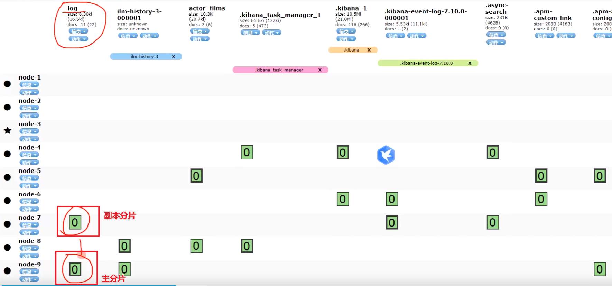
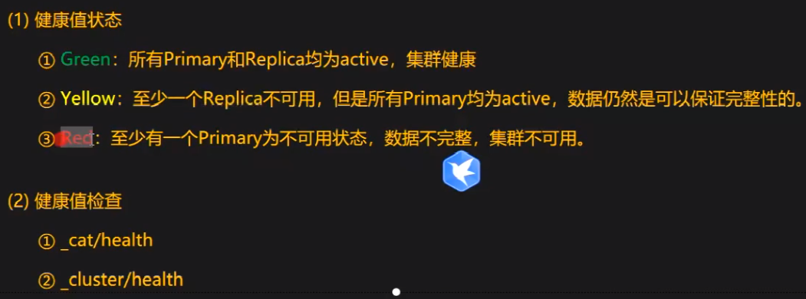
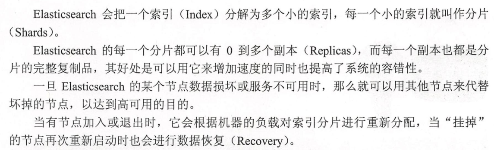
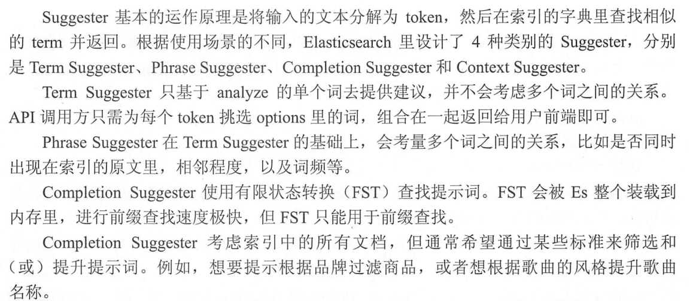

elastic-search
[TOC]
技术栈
MySQL 有的功能，elastic search 一般都有。(elastic search 没有 acid 特性)
-
增量数据迁移 mysql => es: alibaba canal
canal 有服务端(slaver管道)、adapter(消费者) 和 admin 三个主要程序
配置特别麻烦，不适合多现场部署，版本兼容性也不咋地，太重了
-
全量数据迁移：logstash
视频教程
ElasticSearch入门到精通2021最新教程 讲师-吴磊
elasticsearch笔记链接：https://pan.baidu.com/s/1dvrgjdiwf09cOhBiL7ezWQ 提取码：8888 Elasticsearch大数据搜索引擎链接：https://pan.baidu.com/s/14Tc8c6ZXZLZ61i-rKLXxGQ 提取码：8888 第二版：Elasticsearch 24 道链接：https://pan.baidu.com/s/15DadWyGblRA1Tenn7JthEg 提取码：8888
数据高可用

高可用，就是数据冗余，elastic search 会进行数据冗余，副本分片是只读的，主要用来做搜索。
集群健康值
green-yellow-red
查看当前集群不健康的原因：get _cluster/allocation/explain
灰色的分片，是因为我们只有一个节点，数据是不可能有副本的，这违背了高可用原则。
怎么把黄色告警删除？把这个索引的副本分片设置为 0:
put index_name/_settings
{
"number_of_replicas": 1
}

index, shards, replicas
elastic search 不能以 root 用户启动。
基于canal的MySQL=>ES数据同步方案
-
概念
canal [kə'næl]，译意为水道/管道/沟渠，主要用途是基于 MySQL 数据库增量日志解析，提供增量数据订阅和消费
早期阿里巴巴因为杭州和美国双机房部署，存在跨机房同步的业务需求，实现方式主要是基于业务 trigger 获取增量变更。从 2010 年开始，业务逐步尝试数据库日志解析获取增量变更进行同步，由此衍生出了大量的数据库增量订阅和消费业务。
-
应用场景
Elasticsearch不支持事务。 ES通常在分布式系统架构中承担“搜索引擎”的角色，一般来说解决词类问题，可以把ES和支持ACID特性的关系型数据库结合起来使用。首先把对数据的更（增删改）操作在RDB中执行，然后把这些动作同步到Elasticsearch。 通过这种方式，你将受益于数据库 ACID 事务支持，并且在 Elasticsearch 中以正确的顺序产生变更。 并发在关系数据库中得到了处理。以
MySQL为例，如果要把数据从同步至ES，canal + binary log就是常用的一种增量解决方案。 -
原理
MySQL主备复制原理
- MySQL master 将数据变更写入二进制日志( binary log, 其中记录叫做二进制日志事件binary log events，可以通过 show binlog events 进行查看)
- MySQL slave 将 master 的 binary log events 拷贝到它的中继日志(relay log)
- MySQL slave 重放 relay log 中事件，将数据变更反映它自己的数据
canal 工作原理
-
canal 模拟 MySQL slave 的交互协议，伪装自己为 MySQL slave ，向 MySQL master 发送dump 协议
-
MySQL master 收到 dump 请求，开始推送 binary log 给 slave (即 canal )
-
canal 解析 binary log 对象(原始为 byte 流)

-
优势
- 准实时性
- 性能好
- 一劳永逸
-
玩法
-
环境：
Java和ES兼容性：https://www.elastic.co/cn/support/matrix#matrix_jvm
- JDK：1.8
- Elasticsearch：7.x
- MySQL： 5.7
- Canal： 1.1.4
-
下载：
Github： https://github.com/alibaba/canal/
Github 咻咻咻： https://github.com/fhefh2015/Fast-GitHub
-
步骤：
-
保证
Elasticsearch服务可用 -
保证
MySQL服务可用 -
开启MySQL的binary log（主备模式）
- 配置：
server_id = 1 #开启主从模式后每个MySQL节点的id log-bin = mysql-bin #bin-log的存储位置 binlog-format = ROW #选择存储binlog日志方式为ROW模式-
重启MySQL服务
-
验证是否开启成功
SHOW VARIABLES LIKE 'log_bin'; log_bin ON #开启
-
canal-deployer-
配置
conf/example/instance.properties#canal示例的slaveId canal.instance.mysql.slaveId=1234 #mysql地址 canal.instance.master.address= 127.0.0.1:3306 #用户名 canal.instance.dbUsername = root #密码 canal.instance.dbPassword = 123456 #指定需要同步的数据库 canal.instance.defaultDatabaseName = msb_order #指定编码方式 canal.instance.connectionCharset = UTF-8 #监控的是所有数据库，所有的表改动都会监控到，这样可能会浪费不少性能，可能我只想监控的是某一个数据库下的表。 # .*\\..*表示监控所有数据库，canal\\..*表示监控canal数据库 canal.instance.filter.regex = .\*\\\\..\* -
启动： ./startup.sh（Linux）
-
验证：demo
-
-
canal-admin-
配置
conf/application.ymlserver: port: 8089 spring: jackson: date-format: yyyy-MM-dd HH:mm:ss time-zone: GMT+8 spring.datasource: address: 127.0.0.1:3306 database: canal_manager username: root password: 123456 driver-class-name: com.mysql.jdbc.Driver url: jdbc:mysql://${spring.datasource.address}/${spring.datasource.database}?useUnicode=true&characterEncoding=UTF-8&useSSL=false hikari: maximum-pool-size: 30 minimum-idle: 1 canal: adminUser: admin adminPasswd: admin -
启动管理服务
-
访问服务：
server_ip:8089
-
-
canal-adapter- 配置
conf/application.yml
server: port: 8081 spring: jackson: date-format: yyyy-MM-dd HH:mm:ss time-zone: GMT+8 default-property-inclusion: non_null canal.conf: mode: tcp #tcp kafka rocketMQ rabbitMQ flatMessage: true zookeeperHosts: syncBatchSize: 1000 retries: 0 timeout: accessKey: secretKey: consumerProperties: # canal tcp consumer canal.tcp.server.host: 127.0.0.1:11111 canal.tcp.zookeeper.hosts: canal.tcp.batch.size: 500 canal.tcp.username: canal.tcp.password: # kafka consumer kafka.bootstrap.servers: 127.0.0.1:9092 kafka.enable.auto.commit: false kafka.auto.commit.interval.ms: 1000 kafka.auto.offset.reset: latest kafka.request.timeout.ms: 40000 kafka.session.timeout.ms: 30000 kafka.isolation.level: read_committed kafka.max.poll.records: 1000 # rocketMQ consumer rocketmq.namespace: rocketmq.namesrv.addr: 127.0.0.1:9876 rocketmq.batch.size: 1000 rocketmq.enable.message.trace: false rocketmq.customized.trace.topic: rocketmq.access.channel: rocketmq.subscribe.filter: # rabbitMQ consumer rabbitmq.host: rabbitmq.virtual.host: rabbitmq.username: rabbitmq.password: rabbitmq.resource.ownerId: srcDataSources: defaultDS: url: jdbc:mysql://127.0.0.1:3306/msb_order?useUnicode=true username: root password: 123456 canalAdapters: - instance: example # canal instance Name or mq topic name groups: - groupId: g1 outerAdapters: - name: logger - name: es7 hosts: 127.0.0.1:9200 # 127.0.0.1:9200 for rest mode key: exampleKey properties: mode: rest # transport or rest # security.auth: test:123456 # only used for rest mode cluster.name: elasticsearch- 配置
conf/es7/my_order.yml
dataSourceKey: defaultDS # 源数据源的key, 对应上面配置的srcDataSources中的值 outerAdapterKey: exampleKey # 对应application.yml中es配置的key destination: example # cannal的instance或者MQ的topic groupId: g1 # 对应MQ模式下的groupId, 只会同步对应groupId的数据_search esMapping: _index: msb_order # es 的索引名称 _type: _doc # es7 固定'_doc'，es8删除 _id: _id # es 的_id, 如果不配置该项必须配置下面的pk项_id则会由es自动分配 upsert: true sql: "SELECT a.id as _id, a.customer_phone, a.customer_name, a.customer_region, a.customer_city, a.customer_district, a.customer_addr, a.failure_phenomenon, a.failure_phenomenon_text, a.book_date, a.service_required, a.buyshop_detail, a.buy_shop, a.buy_way, a.product_type, a.model_no, a.process_type, a.ex_order_no, a.customer_country, a.source, a.matnr, a.buyDate, a.serviceReq, a.create_time, a.result, a.rvstatus, a.ip_address FROM msb_order_1 a" commitBatch: 3000- 服务启动
- 注意：
- 索引
msb_order的mapping必须提前创建好 - 索引中的
id字段是_id，因此需要查询的时候需要id as _id
- 索引
- 配置
-
按时
-
-
搜索推荐词
Query Suggestion
过滤
filter 对结果进行过滤。filter 不会贡献相关性得分。